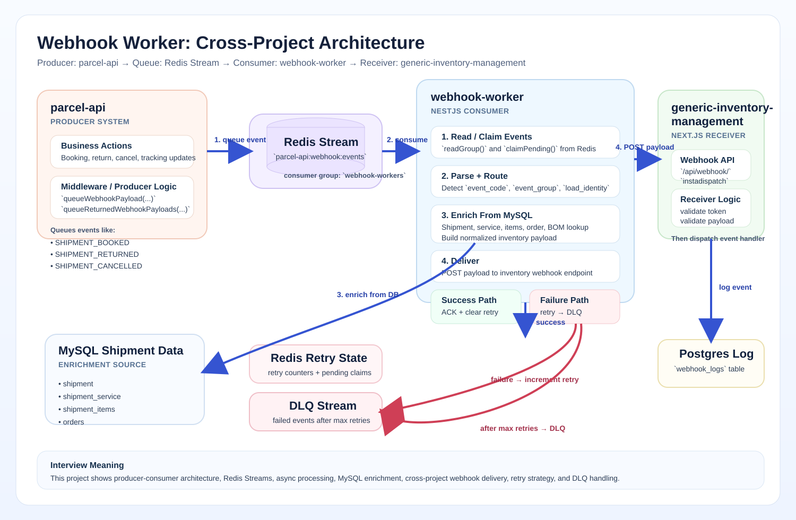

Visual Overview

Reference visual of the event flow from producer to worker, enrichment, and downstream delivery.
Independent Project
Webhook Worker is a NestJS-based async backend service that consumes shipment events from Redis Streams, enriches data, and posts normalized payloads downstream with retry and DLQ handling.

Reference visual of the event flow from producer to worker, enrichment, and downstream delivery.
This is one of the strongest backend examples because it shows event-driven design, reliability concerns, async processing, and production-style failure handling.
This is the best page to open first if the interviewer wants a modern backend example quickly.